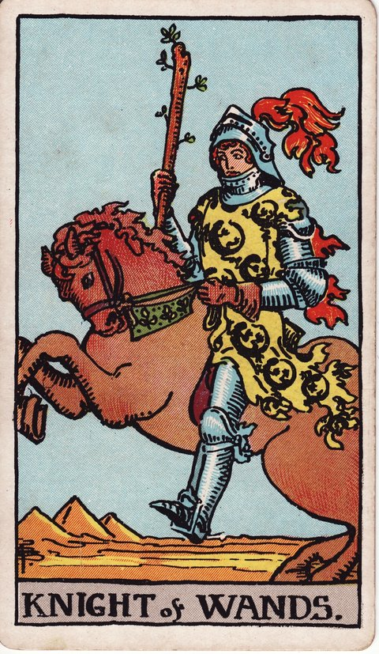

완드 · 타로 카드 백과사전
완드 기사

정방향
키워드: 열정적인 추진력 · 모험심 · 과감한 행동 · 거침없는 질주 · 대담한 기세 · 방향키를 쥔 도전
조언: 열정을 실행으로 옮기되 주변 상황을 살피며 속도를 조절하세요.
연애운
솔로
마음에 드는 상대에게 적극적으로 다가가는 시기입니다. 열정적인 고백이나 데이트 신청이 좋은 반응을 얻을 수 있어요.
커플
열정적으로 적극적인 애정 표현을 하는 시기입니다. 이벤트나 여행 같은 과감한 시도가 관계에 활력을 더할 수 있어요.
재물운
소비
과감한 소비 결정을 내리기 쉬운 열정적인 시기입니다. 원하는 것이 있다면 계획 안에서 시원하게 지출해보세요.
투자
과감한 투자나 결단이 좋은 결과로 이어질 수 있는 시기입니다. 자신감을 갖되 최소한의 검토는 거치세요.
취업운
구직
적극적인 태도로 지원과 면접에 임하는 시기입니다. 자신감 있는 모습이 면접관에게 강한 인상을 남길 수 있어요.
이직
열정적인 추진력으로 목표를 향해 돌진하는 시기입니다. 원하는 자리가 있다면 과감하게 도전해보세요.
직장운
팀워크
새로운 프로젝트가 시작되자마자 앞장서서 방향을 제시하며 팀을 이끄는 시기입니다. 속도감 있게 밀고 나가되 뒤처지는 팀원은 없는지 살펴보세요.
개인성과
밀린 업무를 한꺼번에 몰아붙이며 처리해나가는 추진력이 돋보이는 시기입니다. 속도만 앞세우기보다 중간중간 결과물의 완성도도 함께 챙기세요.
사업운
창업준비
과감한 결단으로 사업 기회를 잡는 시기입니다. 망설이던 결정이 있다면 지금이 실행에 옮길 때입니다.
운영중
열정적인 추진력으로 사업을 확장하는 시기입니다. 다만 확장 속도가 감당할 수 있는 수준인지 점검하세요.
학업운
시험준비
목표를 향해 적극적으로 밀어붙이는 학습 태도가 돋보이는 시기입니다. 집중력을 살려 단기간에 진도를 끌어올려 보세요.
진로고민
관심 있는 진로에 과감하게 뛰어드는 시기입니다. 망설임 없는 도전이 좋은 경험으로 남을 수 있어요.
건강운
신체
활동적으로 운동에 몰입하기 좋은 시기입니다. 새로운 운동에 도전하며 활력을 마음껏 발산해보세요.
정신
열정과 에너지가 넘치는 활기찬 시기입니다. 넘치는 에너지를 건강한 활동으로 발산해보세요.
대인관계운
새로운 인연
적극적으로 다가가 새로운 인연을 만드는 시기입니다. 과감한 첫걸음이 좋은 관계의 시작이 될 수 있어요.
기존 관계
오랜 인연에게 그동안 아꼈던 마음을 적극적으로 표현하고 싶어지는 시기입니다. 오랜 관계에도 새로운 활력을 불어넣어 보세요.
명예운
과감한 행보로 눈에 띄는 평판을 얻는 시기입니다. 자신감 있는 태도가 좋은 인상으로 남을 수 있어요.
이사운
과감하게 이동을 추진하며 좋은 결과를 얻는 시기입니다. 망설이지 말고 원하는 곳으로 결단을 내려보세요.
자식운
아이를 위해 열정적으로 나서는 시기입니다. 적극적인 태도로 아이의 문제를 해결해나가 보세요.
역방향
키워드: 무모함 · 성급한 행동 · 충동적 결단 · 뛰쳐나가는 충동 · 되돌릴 수 없는 결정 · 당겨야 할 고삐
조언: 밀어붙이기 전에 잠시 멈춰 지금의 판단이 성급하지 않은지 점검하세요.
연애운
솔로
너무 성급한 접근이 상대를 부담스럽게 할 수 있습니다. 열정을 조금 누그러뜨리고 상대의 속도에 맞춰보세요.
커플
감정 기복이 심해 관계에 불안정함을 줄 수 있습니다. 순간의 감정으로 성급한 말을 하지 않도록 주의하세요.
재물운
소비
충동적인 지출이 예산을 흔들 수 있는 시기입니다. 순간의 기분으로 큰돈을 쓰지 않도록 조심하세요.
투자
성급한 투자 결정이 손실로 이어질 수 있으니 신중하세요. 좋아 보이는 기회일수록 한 번 더 검토하는 시간을 가지세요.
취업운
구직
무모한 행동으로 일을 그르칠 수 있으니 속도 조절이 필요합니다. 서두르다 놓친 서류나 절차는 없는지 확인하세요.
이직
성급한 이직 결정이 후회로 이어질 수 있는 시기입니다. 감정적으로 결정하기보다 조건을 냉정하게 따져보세요.
직장운
팀워크
혼자 앞서 나가려는 무모함이 팀 전체 진행을 흐트러뜨릴 수 있습니다. 결정을 내리기 전에 팀원들과 속도를 맞추는 논의부터 거쳐보세요.
개인성과
성급한 판단이 업무 실수로 이어질 수 있습니다. 서두르기 전에 계획을 한 번 더 점검하세요.
사업운
창업준비
패기만 믿고 시장 조사 없이 창업에 뛰어들었다가 낭패를 볼 수 있습니다. 자신감이 넘칠수록 실패 사례부터 먼저 찾아보는 신중함이 필요합니다.
운영중
무리한 확장이 자금 압박으로 이어질 수 있습니다. 속도를 늦추고 현재 상황을 냉정하게 점검해보세요.
학업운
시험준비
성급하게 진도를 나가다 기초를 놓칠 수 있습니다. 속도보다 이해도를 먼저 점검하세요.
진로고민
충분한 고민 없이 진로를 성급하게 결정할 수 있습니다. 열정만으로 판단하기보다 현실적인 부분도 함께 따져보세요.
건강운
신체
무리한 운동으로 부상을 입을 수 있으니 주의하세요. 의욕만 앞서 몸의 한계를 넘지 않도록 조심하세요.
정신
감정 기복이 심해 마음이 쉽게 흔들릴 수 있습니다. 충동적인 결정을 내리기 전에 잠시 마음을 가라앉혀보세요.
대인관계운
새로운 인연
낯선 사람에게 너무 많은 관심을 한꺼번에 쏟아내다 오히려 부담스러운 인상을 남길 수 있습니다. 몇 번 더 만나며 서서히 거리를 좁혀가 보세요.
기존 관계
감정적인 태도가 관계에 마찰을 만들 수 있습니다. 순간의 감정보다 상대의 입장을 먼저 헤아려보세요.
명예운
무모한 행동이 평판에 부정적 영향을 줄 수 있습니다. 성급한 언행을 조심하고 신중하게 행동하세요.
이사운
일정이나 비용을 제대로 따져보지도 않고 충동적으로 이동을 결정해버릴 수 있는 시기입니다. 계약서에 서명하기 전에 하루 정도는 시간을 두고 다시 생각해보세요.
자식운
성급한 결정이 아이에게 부담을 줄 수 있습니다. 아이와 관련된 결정일수록 조금 더 신중하게 접근하세요.
같은 슈트: 완드 에이스 · 완드 2 · 완드 3 · 완드 4 · 완드 5 · 완드 6 · 완드 7 · 완드 8 · 완드 9 · 완드 10 · 완드 시종 · 완드 기사 · 완드 퀸 · 완드 킹
홈에서 직접 카드 뽑아보기 ↗